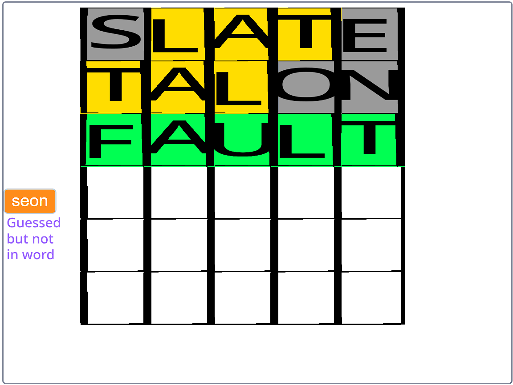

Video Whiteboard
Allows a user to draw on a virtual whiteboard real-time while video conferencing.
|
|
|  |
Dominic Wordle
Recreation of Wordle game using actual Wordle dictionary and sprites for each letter.
|
First Person 3D Maze Game
This game renders the 3D Maze from the 2D Map in real-time. The goal of the game is to explore the
maze while collecting stars and avoiding enemies. The game ends when your health is 0 or you collect
all the stars.You can also press M to overlay the 2D map which shows the walls (in gray) and the real-time location of all the stars and enemies.
|
|
AI Shape DetectorThis program uses neural networks and convolutions to learn a shape and then detect it. This example
was created to detect donuts.
|

Oops! I need to get rid of a
|

Which masks work the best at
|

What method of growing
|